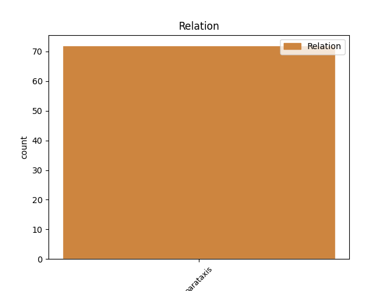
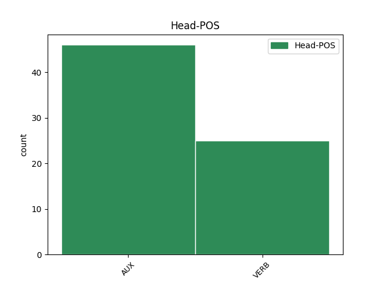
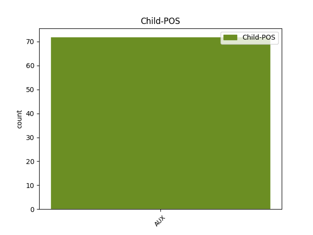

Distribution of features within this leaf



Agreement Rules sorted by frequency.
- When the dependent token is the parataxis(parataxis) of the head token, and the head token is AUX and the dependent token is VERB.
1 Նրան _ _ _ _ 0 _ _ _
2 կարող _ _ _ _ 0 _ _ _
3 են եմ AUX _ Aspect=Imp|Mood=Ind|Number=Plur|Person=3|Polarity=Pos|Tense=Pres|VerbForm=Fin 0 _ _ _
4 ազատազրկել _ _ _ _ 0 _ _ _
5 , _ _ _ _ 0 _ _ _
6 գնդակահարել _ _ _ _ 0 _ _ _
7 , _ _ _ _ 0 _ _ _
8 տեղափոխել _ _ _ _ 0 _ _ _
9 ԵԱՏՄ _ _ _ _ 0 _ _ _
10 անդամ _ _ _ _ 0 _ _ _
11 այլ _ _ _ _ 0 _ _ _
12 երկրի _ _ _ _ 0 _ _ _
13 բանտ _ _ _ _ 0 _ _ _
14 , _ _ _ _ 0 _ _ _
15 չէ _ _ _ _ 0 _ _ _
16 ՞ _ _ _ _ 0 _ _ _
17 որ _ _ _ _ 0 _ _ _
18 մենք _ _ _ _ 0 _ _ _
19 հիմա _ _ _ _ 0 _ _ _
20 մեկ _ _ _ _ 0 _ _ _
21 ընդհանուր _ _ _ _ 0 _ _ _
22 բանտ _ _ _ _ 0 _ _ _
23 ունենք ունեմ VERB _ Aspect=Imp|Mood=Ind|Number=Plur|Person=1|Polarity=Pos|Subcat=Tran|Tense=Pres|VerbForm=Fin|Voice=Act 3 parataxis _ LTranslit=ownem|SpaceAfter=No|Translit=ownenk’
24 : _ _ _ _ 0 _ _ _
1 Հնարավոր _ _ _ _ 0 _ _ _
2 է _ _ _ _ 0 _ _ _
3 Մուրակամիի _ _ _ _ 0 _ _ _
4 շատ _ _ _ _ 0 _ _ _
5 սիրահարներ _ _ _ _ 0 _ _ _
6 ասեն ասել VERB _ Aspect=Prosp|Mood=Sub|Number=Plur|Person=3|Polarity=Pos|Subcat=Tran|Tense=Pres|VerbForm=Fin|Voice=Act 0 _ _ _
7 ՝ _ _ _ _ 0 _ _ _
8 ինչ _ _ _ _ 0 _ _ _
9 անենք անել VERB _ Aspect=Prosp|Mood=Sub|Number=Plur|Person=1|Polarity=Pos|Subcat=Tran|Tense=Pres|VerbForm=Fin|Voice=Act 6 parataxis _ LTranslit=anel|SpaceAfter=No|Translit=anenk’
10 , _ _ _ _ 0 _ _ _
11 մեկ _ _ _ _ 0 _ _ _
12 է _ _ _ _ 0 _ _ _
13 , _ _ _ _ 0 _ _ _
14 լավ _ _ _ _ 0 _ _ _
15 է _ _ _ _ 0 _ _ _
16 կարդացվում _ _ _ _ 0 _ _ _
17 ։ _ _ _ _ 0 _ _ _
Disagree Examples:
1 Ի _ _ _ _ 0 _ _ _
2 սկզբանե _ _ _ _ 0 _ _ _
3 մեր _ _ _ _ 0 _ _ _
4 ուշքումիտքն _ _ _ _ 0 _ _ _
5 ինքնապահպանումն _ _ _ _ 0 _ _ _
6 էր եմ AUX _ Aspect=Imp|Mood=Ind|Number=Sing|Person=3|Polarity=Pos|Tense=Imp|VerbForm=Fin 0 _ _ _
7 , _ _ _ _ 0 _ _ _
8 ստամոքսը _ _ _ _ 0 _ _ _
9 լցնելը _ _ _ _ 0 _ _ _
10 , _ _ _ _ 0 _ _ _
11 էդ _ _ _ _ 0 _ _ _
12 հետո _ _ _ _ 0 _ _ _
13 , _ _ _ _ 0 _ _ _
14 երբ _ _ _ _ 0 _ _ _
15 անտառից _ _ _ _ 0 _ _ _
16 փախանք _ _ _ _ 0 _ _ _
17 , _ _ _ _ 0 _ _ _
18 քաղաքակրթություն _ _ _ _ 0 _ _ _
19 ստեղծեցինք ստեղծել VERB _ Aspect=Perf|Mood=Ind|Number=Plur|Person=1|Polarity=Pos|Subcat=Tran|Tense=Past|VerbForm=Fin|Voice=Act 6 parataxis _ LTranslit=steġçel|SpaceAfter=No|Translit=steġçec’ink’
20 , _ _ _ _ 0 _ _ _
21 ազատ _ _ _ _ 0 _ _ _
22 ու _ _ _ _ 0 _ _ _
23 համեմատաբար _ _ _ _ 0 _ _ _
24 անվտանգ _ _ _ _ 0 _ _ _
25 ժամանակ _ _ _ _ 0 _ _ _
26 ունեցանք _ _ _ _ 0 _ _ _
27 ուրիշ _ _ _ _ 0 _ _ _
28 , _ _ _ _ 0 _ _ _
29 անտագնապ _ _ _ _ 0 _ _ _
30 աչքով _ _ _ _ 0 _ _ _
31 մեր _ _ _ _ 0 _ _ _
32 շուրջը _ _ _ _ 0 _ _ _
33 նայելու _ _ _ _ 0 _ _ _
34 : _ _ _ _ 0 _ _ _
1 – _ _ _ _ 0 _ _ _
2 Բա _ _ _ _ 0 _ _ _
3 ՛ _ _ _ _ 0 _ _ _
4 , _ _ _ _ 0 _ _ _
5 – _ _ _ _ 0 _ _ _
6 լսվեց լսվել VERB _ Aspect=Perf|Mood=Ind|Number=Sing|Person=3|Polarity=Pos|Subcat=Intr|Tense=Past|VerbForm=Fin|Voice=Mid 13 parataxis _ LTranslit=lsvel|Translit=lsvec’
7 ետևից _ _ _ _ 0 _ _ _
8 , _ _ _ _ 0 _ _ _
9 – _ _ _ _ 0 _ _ _
10 էսպես _ _ _ _ 0 _ _ _
11 խելոք _ _ _ _ 0 _ _ _
12 շուն _ _ _ _ 0 _ _ _
13 ա եմ AUX _ Aspect=Imp|Mood=Ind|Number=Sing|Person=3|Polarity=Pos|Style=Coll|Tense=Pres|VerbForm=Fin 0 _ _ _
14 մեր _ _ _ _ 0 _ _ _
15 Չալոն _ _ _ _ 0 _ _ _
16 ։ _ _ _ _ 0 _ _ _
1 « _ _ _ _ 0 _ _ _
2 Էլի _ _ _ _ 0 _ _ _
3 ծառ _ _ _ _ 0 _ _ _
4 են եմ AUX _ Aspect=Imp|Mood=Ind|Number=Plur|Person=3|Polarity=Pos|Tense=Pres|VerbForm=Fin 0 _ _ _
5 կտրել _ _ _ _ 0 _ _ _
6 անտերները _ _ _ _ 0 _ _ _
7 » _ _ _ _ 0 _ _ _
8 , _ _ _ _ 0 _ _ _
9 – _ _ _ _ 0 _ _ _
10 մրթմրթաց մրթմրթալ VERB _ Aspect=Perf|Mood=Ind|Number=Sing|Person=3|Polarity=Pos|Subcat=Intr|Tense=Past|VerbForm=Fin|Voice=Mid 4 parataxis _ LTranslit=mrt’mrt’al|Translit=mrt’mrt’ac’
11 շունը _ _ _ _ 0 _ _ _
12 , _ _ _ _ 0 _ _ _
13 հանեց _ _ _ _ 0 _ _ _
14 գլխարկն _ _ _ _ 0 _ _ _
15 ու _ _ _ _ 0 _ _ _
16 քորեց _ _ _ _ 0 _ _ _
17 գլուխը _ _ _ _ 0 _ _ _
18 , _ _ _ _ 0 _ _ _
19 դժգոհ _ _ _ _ 0 _ _ _
20 փնչացրեց _ _ _ _ 0 _ _ _
21 և _ _ _ _ 0 _ _ _
22 նստեց _ _ _ _ 0 _ _ _
23 տիրոջ _ _ _ _ 0 _ _ _
24 կողքին _ _ _ _ 0 _ _ _
25 ։ _ _ _ _ 0 _ _ _
1 « _ _ _ _ 0 _ _ _
2 Քոռանամ քոռանալ VERB _ Aspect=Prosp|Mood=Sub|Number=Sing|Person=1|Polarity=Pos|Subcat=Intr|Tense=Pres|VerbForm=Fin|Voice=Mid 0 _ _ _
3 ես _ _ _ _ 0 _ _ _
4 , _ _ _ _ 0 _ _ _
5 — _ _ _ _ 0 _ _ _
6 ասաց ասել VERB _ Aspect=Perf|Mood=Ind|Number=Sing|Person=3|Polarity=Pos|Subcat=Tran|Tense=Past|VerbForm=Fin|Voice=Act 2 parataxis _ LTranslit=asel|SpaceAfter=No|Translit=asac’
7 , _ _ _ _ 0 _ _ _
8 — _ _ _ _ 0 _ _ _
9 աղջիկս _ _ _ _ 0 _ _ _
10 դժբախտացավ _ _ _ _ 0 _ _ _
11 , _ _ _ _ 0 _ _ _
12 դե _ _ _ _ 0 _ _ _
13 արի _ _ _ _ 0 _ _ _
14 ու _ _ _ _ 0 _ _ _
15 հետո _ _ _ _ 0 _ _ _
16 ապացուցիր _ _ _ _ 0 _ _ _
17 , _ _ _ _ 0 _ _ _
18 որ _ _ _ _ 0 _ _ _
19 կուսությունը _ _ _ _ 0 _ _ _
20 սայթաքելուց _ _ _ _ 0 _ _ _
21 է _ _ _ _ 0 _ _ _
22 կորցրել _ _ _ _ 0 _ _ _
23 » _ _ _ _ 0 _ _ _
24 ։ _ _ _ _ 0 _ _ _
1 Դե _ _ _ _ 0 _ _ _
2 , _ _ _ _ 0 _ _ _
3 իրավաբանական _ _ _ _ 0 _ _ _
4 հենց _ _ _ _ 0 _ _ _
5 էնպես _ _ _ _ 0 _ _ _
6 էր _ _ _ _ 0 _ _ _
7 դիմել _ _ _ _ 0 _ _ _
8 , _ _ _ _ 0 _ _ _
9 որ _ _ _ _ 0 _ _ _
10 հետո _ _ _ _ 0 _ _ _
11 ասեր ասել VERB _ Aspect=Prosp|Mood=Sub|Number=Sing|Person=3|Polarity=Pos|Subcat=Tran|Tense=Imp|VerbForm=Fin|Voice=Act 0 _ _ _
12 ՝ _ _ _ _ 0 _ _ _
13 « _ _ _ _ 0 _ _ _
14 իրավաբանականից _ _ _ _ 0 _ _ _
15 դուրս _ _ _ _ 0 _ _ _
16 մնացի մնալ VERB _ Aspect=Perf|Mood=Ind|Number=Sing|Person=1|Polarity=Pos|Subcat=Intr|Tense=Past|VerbForm=Fin|Voice=Mid 11 parataxis _ LTranslit=mnal|SpaceAfter=No|Translit=mnac’i
17 , _ _ _ _ 0 _ _ _
18 փաստորեն _ _ _ _ 0 _ _ _
19 , _ _ _ _ 0 _ _ _
20 մի _ _ _ _ 0 _ _ _
21 աչոկով _ _ _ _ 0 _ _ _
22 » _ _ _ _ 0 _ _ _
23 , _ _ _ _ 0 _ _ _
24 համ _ _ _ _ 0 _ _ _
25 էլ _ _ _ _ 0 _ _ _
26 , _ _ _ _ 0 _ _ _
27 որովհետև _ _ _ _ 0 _ _ _
28 իրենց _ _ _ _ 0 _ _ _
29 դասարանի _ _ _ _ 0 _ _ _
30 Արտուրիկն _ _ _ _ 0 _ _ _
31 էլ _ _ _ _ 0 _ _ _
32 էր _ _ _ _ 0 _ _ _
33 իրավաբանական _ _ _ _ 0 _ _ _
34 դիմել _ _ _ _ 0 _ _ _
35 , _ _ _ _ 0 _ _ _
36 իսկ _ _ _ _ 0 _ _ _
37 ինքը _ _ _ _ 0 _ _ _
38 թաքուն _ _ _ _ 0 _ _ _
39 սիրահարված _ _ _ _ 0 _ _ _
40 էր _ _ _ _ 0 _ _ _
41 Արտուրիկին _ _ _ _ 0 _ _ _
42 , _ _ _ _ 0 _ _ _
43 բայց _ _ _ _ 0 _ _ _
44 վերջինս _ _ _ _ 0 _ _ _
45 , _ _ _ _ 0 _ _ _
46 էն _ _ _ _ 0 _ _ _
47 սայթաքելու _ _ _ _ 0 _ _ _
48 օրվանից _ _ _ _ 0 _ _ _
49 հետո _ _ _ _ 0 _ _ _
50 իր _ _ _ _ 0 _ _ _
51 հետ _ _ _ _ 0 _ _ _
52 չէր _ _ _ _ 0 _ _ _
53 խոսում _ _ _ _ 0 _ _ _
54 ։ _ _ _ _ 0 _ _ _